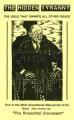

A felületes szemlélő nem is gondolkodik azon, hogy vajon honnan
veszik sokan, hogy létezhet a világzsidóság összeesküvésének nevezett valami, amely méreteiről,
erejéről természetesen nem sokat tudunk. Azt gondolják, biztos, hogy csak kitalálták, leültek,
gondolni próbáltak valami merészet, és ez lett belőle. Vannak ilyen elméletgyártók, de itt mégis
többről van szó: ennek bizonyítékai vannak, gyanúébresztő jelei, s szerencsére néhány tagjának
megdöbbentő vallo- mása.
Harold Wallace Rosenthal már a háború után, 1947-ben született, s a
megerősödő zsidóság egyik elismert tagjává vált Washingtonban. Meglehetősen sokra vitte: Jacob K.
Javits New York-i szenátor segédje lett. 1976-ban készített vele interjút a Western Front
vezetője, Walter White. Az interújból egy tizenhat oldalas kiadvány lett, amelyből részleteket
közölt le nálunk a Front 2007 októberi számában.
Még White várakozását is fölülmúlták a
huszonkilenc éves fiatalember szavai. A washingtoni zsidóság ismert és elismert tagjaként ő
nemhogy tiltakozott volna az úgynevezett zsidó összeesküvéssel kapcsolatban, hanem egyenesen
kérkedett vele, azt mondta, hogy a „karácsony hülyeségeiről” papoló „ostoba
gójok” észre sem veszik, amint meghódítják előlük a világot.
Rosenthal kijelentései
szinte bizonyosan az antiszemitizmus vádját vonták volna maguk után, ha ő maga nem lett volna a
helyi zsidóság egyik ismert és fontos személyisége. Önteltsége és győzelmükbe vetett korlátlan
hite miatt mégis őszintén beszélt White-tal, aki rá is kérdezett, hogyan is néz ki egy ilyen
meghódítás.
Rosenthal szerint a művelet legfontosabb pontja a média teljes irányításának
megszerzése: ha egy folyóirat szerkesztője nem hajlandó a zsidó hírszolgálatok kozmetikázott
anyagát átvenni vagy úgy és arról írni, amiről ők szeretnék, akkor egyszerűen megvonják tőlük a
hirdetőket. Mivel a nagyobb vállalatok vezetői éppen úgy érintettek a zsidóság kiszolgálásában,
mint maguk a zsidók (mert ők is azok vagy függnek tőlük), ezért könnyű dolguk van, de a kisebb
cégeket is könnyedén megfélemlíthetik. Az újság így hamar csődbe megy: éppen erről írt a volt
amerikai képviselő, David Duke, amikor a saját lakhelyének nemzeti (amerikai) érzelmű újságjait
tönkre tették, majd olcsón megvásárolták, és a saját ízük szerint vezették tovább a helyi
zsidók.
A férfi elmondja, hogy 1932 óta nem választottak maguknak valódi elnököt az
amerikaiak: Roosevelt óta minden elnök az ő emberük. Az amerikai külpolitikát az elejétől végéig
cionista-kommunista politikának nevezte. Kifejti, hogy a zsidók minden oldalt és véleményt
támogatnak egy kissé, így okoznak zűrzavart, és altatják el a gyanakvást: „mi, zsidók úgy
játszadozunk az amerikai közvéleménnyel, mint macska az egér- rel”.
Még White is
úgy érezte néhány pillanatra – és mi is milyen gyakran ostorozzuk így magunkat –,
hogy talán az emberek meg is érdemlik a sorsukat, ha ilyen vakok. Rosenthal erre csak ennyit
válaszolt hidegen: „a tömegek vére folyik majd az utcán, míg mi várjuk világgyőzelmünk
nagy napját”.
White kérdőre vonja Rosenthalt, hogy mi történik azokkal a
dollármilliókkal, amelyeket Amerika küld Izraelbe. A férfi kifejti, hogy Washingtonban olyan
ostobák, hogy nem jönnek rá, mire is kell valójában a pénz. Egy része egyébként vissza is kerül
az USA-ba, méghozzá többek között a zsidók úgynevezett rágalmazásellenes ligáján, a B'nai
B'rithen keresztül, majd cionista propagandára használják föl. Rosenthal egyébként értetlenkedik: ő
nem találja erkölcstelennek vagy kivetnivalónak kiszipolyozni a becsapottakat. Ekkor az interjú
megfordul: a zsidó férfi kérdez, méghozzá azt, hogy White miért gyűlöli a zsidókat. A válasz
ez:
„Mr. Rosenthal, én senkit sem gyűlölök. Én azt mondtam, hogy azt
gyűlölöm, amit a zsidók velünk művelnek, ami különösképpen érint mindent, ami keresztény. Gyűlölöm
a csalásaikat, szemfény- vesztéseiket, dörzsöltségüket és utálatos becstelenségüket. Most én
mindettől antiszemita leszek? Ha igen, akkor kijelentem, hogy antiszemita
vagyok!”
Rosenthal válasza is szó szerinti idézést érdemel:
„Az antiszemitizmus nem a szemitizmussal való ellentétet jelenti.
Ilyen nincs. Ez egy kifejezés, amit mi, zsidók mint rágalmat elég hatásosan használunk –
az olyan bigottokra használjuk, mint például ön –, vagyis bárkire, aki kritizálni
meri a zsidókat. A gyűlöletkeltők ellen használjuk.”
A férfi elmagyarázza azt is,
hogy miért „feszíttették” meg Krisztust: a Jézus nevű „közönséges ember
mítosza csak egy rakás szar”, ráadásul Krisztus olyanokat tanított, hogy fordítsd oda a
másik orcádat is, ez lex talionis helyett, ez pedig szerinte elfogadhatatlan. White a karácsony
ünnepével kapcsolatban azt mondta, hogy sajnálja Rosenthalt az élete és elvei miatt; ekkor a
férfi kissé elveszti a fejét:
„Nekem ne jöjjön senki
ilyen hülyeséggel. Nincs szükségem a sajnálkozásra. Nem kell! Nagyon sok zsidónak nincs mersze
maguknak megmondani, hogy mi hogy élünk és tervezünk, de engem senki sem félemlíthet meg. Tudom,
merre tartok.”
Rosenthal kérdésre elmondja, hogy a zsidókra jellemző névcserék
egyszerű elvben alapulnak: ha egy zsidónak érdekében áll valami, akkor megteszi, így van ez a
névváltoztatásokkal is. Amit ezután mond, az a veleje Rosenthal mondandójának:
„A legtöbb zsidó világszerte, mondhatnám 90%-a tudja, mi történik a
népünkkel. A közöttünk működő kapcsolat példa nélküli. Az önök társadalmában csak az ostobák, a
tudatlanok és a hülyék találnak békét, és a magukfajta fattyúk bűneikkel együtt bújnak
báránybőrbe. Önök a képmutatók, nem pedig a zsidók, ahogy ezt megírják és
mondják.”
Rosenthal tehát olyannyira hisz a zsidóság felsőbbrendűségében, hogy
nem is érti meg, miért kelt vissza- tetszést és undort az emberekben a kizsákmányoló
technikájuk: úgy gondolja, ezt érdemlik a gójok, nem kellene fölháborodniuk.
Az
oroszországi zsidósággal kapcsolatban (tudniillik az oroszoknál a pártvezetés szinte teljesen
zsidó kézben volt) megjegyzi, hogy Szovjet-Oroszország kommunista pártjában nagyjából 50% a gój,
de utóbbiak megbízhatatlanok és nincsenek igazi döntési pozícióban. 56 évente egy titkos csoport
le is cseréli a teljes garnitúrát, mert nagyjából ekkorra jönnek rá a „láthatatlan
zsidókormány titkaira”. Elmondja, hogy a Kom- munista Központot ugyanez a csoport vitte
Tel Avivba. Az ENSZ-t egy a Vörös Világra néző csapóajtónak nevezi, amely „nagyjából a mi
irányításunk alatt áll”.
White fölteszi az ébredők egyik első kérdését: miért jó
szétverni a nemzetek és országok mellett a leg- szentebb vérségi egységet, a családot
is?
„Hagyományos szabályunk elpusztítani a létező kormányt,
családjaikat, de sohasem a zsidókat. Meg- semmisíteni a rendőrséget, a katonatiszteket és
családjaikat, de sohasem a zsidókat. Nézze, mi tudjuk, hogy amikor a kormány kommunisták után
kutat, valójában a zsidókról akarja lerántani a leplet. Minket nem lehet hülyíteni! A kommunista
országok láthatatlan urainak világméretű hatalma van a propagan- da és a szabad államok kormányai
felett. Mi irányítjuk az összes hírközlő szervet, folyóiratot, újságot, képeslapot, rádiót és
televíziót. Még a zenét, a kiadásra váró énekeket is! Még az önök gondolkodása is nemsokára a mi
irányításunk alatt lesz!”
Rosenthal hihetetlen pontossággal mutat rá cionista
zsidóként az antiszemiták leggyakoribb érveinek helyességére: míg a riport készítésekor a
kommunizmus fenyegetett, ma már más politikai rendszereket alkotnak a zsidók, de ugyanabból a
célból. Ha ijesztőnek tűnik mindezeket egy zsidó szájából hallani, akkortalán föl sem készültünk a
valódi fenyegetésre: Rosenthal mesterséges osztályharcot jósol, amelyben elpusztulnak az olyan
emberek, mint például az interjút készítő White. Szerinte a kereszténységnek már régen késő az
ellenállásra.
A magukat zsidónak valló feketékről is érdekes véleménye van a férfinek
(ilyen egyébként Whoopi Goldberg is):
„A feketék a mi
céljainkat szolgálják. Tudjuk, hogy színesbőrűből nem lehet zsidó; például Sammy Davis továbbra is
színesbőrű. Lehet, hogy az előnyére vált az áttérés, de azért még mindig néger és nem
zsidó.”
White a zsidóság és az erkölcs kapcsolatát próbálja firtatni, de Rosenthal
közbevág: „a pénz sokkal fontosabb az erkölcsnél, hiszen pénzzel akármit
megoldhatunk”. A férfi elmondja, hogy a Talmud nem készíti föl a zsidót a halál utáni
életre, sőt azt tanítja, hogy a jelent kell élvezni, mert itt lehet csak az isteni akarat szerint
cselekedni, hiszen nincs halál utáni lét.
Hogy mégis miképpen sikerült ilyen ügyesen
elrejteni a zsidóság valódi célját az emberek elől?
„Mi mindaddig
élhetünk más nemzetek között, amíg sikerül meggyőzni őket arról, hogy a zsidók nem tőlük eltérő
nép tagjai, hanem csak egy vallás képviselői, akik alkotják »vallási közösségüket«, bár
ez a különös jellegzetességük. Sőt, ez a mi legnagyobb hazugságunk...”
Rosenthal
kifejti, hogyan érti ezt: „hogy szabadon gyakorolhassuk parazita jellegű létünket a
nemzetek között [elérjük, hogy azt gondolják] a köztük élő zsidók tulajdonképpen valódi
franciák, angolok, olaszok vagy németek, akik csupán egy, az ezekben az országokban a
nagytöbbségtől eltérő vallásfelekezethez tartoznak”. Az elv csodálatosan ravasz: kicsinek
és jelentéktelennek mutatni az erős összetartást, ráadásul mindezt vallási köntösben, hiszen
Európában a vallás egy manapság többnyire ártatlan, sőt pozitív jelentésű dolog.
A
hatalom megszerzése a zsidók számára Rosenthal szerint nagyon egyszerű volt:
„Hatalmunkat a nemzeti pénzrendszerrel való mesterkedéssel
szereztük. Jelszavunk: »A pénz hata- lom.« Amint a nagy tervezetünkben is írva van,
meg kellett alapítanunk a privát nemzeti bankot. [...] Kezdettől fogva az volt a célunk, hogy
összeszedjük az összes aranyat és ezüstöt, és helyettesítsük értéktelen, »beválthatatlan
papír pénzjegyekkel«. Ez nekünk sikerült is!
1968 előtt az ostoba gój egydolláros
Federal Reserve papírjegyét elvihette bármelyik amerikai bankba, és beválthatta egy dollárra,
amely a törvény szerint 412,5 szemer 90%-os ezüstöt tartalmazott. 1933- ig valaki beválthatta
ugyanezt a papírjegyet 24 4/5 szemer 90%-os aranytartalmú pénzre. Mi nem teszünk egyebet, csak a
gójnak adunk még több papírjegyet, vagyis rézdarabokat. De soha nem adunk nekik ezüstöt és
aranyat. Csak sok papírt. Mi, zsidók papírcsalásból gazdagodtunk meg. Ez a mi módszerünk:
elvesszük a pénzt és adunk helyette papírt.”
Rosenthal még konkrét példákat is
hoz az ilyen csalásokra, de ezeket fölösleges elismételni. Azt viszont fontos itt is
megjegyezni, aminek a bankszektorral kapcsolatban már régen komoly vita tárgyának kellene
lennie: egy országban a pénz kibocsátásának egyedüli joga csak az államé lehet. Elképzelhetetlen
lenne, hogy a magánember is otthon államilag érvényes pénzt verjen, adjon ki, mert ez az egész
államgazdaságot romokba döntené. Mégis a magánkézben lévő bankok pénzt hozhatnak forgalomba: a
hitel, de különböző kötvények stb. is remek példa erre. A hitel nem létező pénz, csak egy papír,
amely valódi pénzre is váltható, de nem feltételnül. Valaki egy konkrét összegért kevesebb pénzt
vesz föl, a hitel összege pedig akár külföldről is beáramoltatható, rontva a hazai pénz értékét.
Gyakorlatilag nagyon drágán tényleg csak egy papírt kapunk és a bank jóvoltából addig nem létező
pénz jön létre (végül pedig ő is többet kap vissza, mint amennyit
„adott”).
White megkérdezi, hogy félnek-e a zsidók a rajtuk átlátó csendes
többségtől.
„Nevetséges! Olyan nincs, hogy csendes többség, mert mi
irányítjuk még a sírásukat és bőgésüket is. Csak nem gondolkodó többség létezik, amely az is
marad mindaddig, amíg a kábítószer hatású szóra- koztató iparunk szolgáltatja nekik az egyetlen
menekvést.”
A vallásos Európai egyszerűen nem volt fölkészítve vallási tanításai
által a váratlan támadásra:
„Politikailag dicsőítik
a demokrácia áldásait, de nem értik, hogy mi éppen a demokráciával kaparintottuk meg a nemzetek
feletti irányítást. Jótékony politikát folytató, a szent könyvek törvényeit tiszteletben tartó
zsarnoki kormányt hirdetnek, míg a demokrácia annak a csürhének az uralma, amelyet mi
irányítujnk az egyházaikon, a hírszolgálatokon és a gazdasági intézményeket
keresztül.”
És valóban: hányszor vitáztunk már azon, hogy a demokrácia helyes
politikai felfogás-e. Az egyik érv egy- szerűen elfogadhatatlan, amely szerint nincs jobb, ezért
van ez, de az is csalás, amely az ókori világ eredeti demokráciájával hasonlítja össze a modern
változatot, hiszen a kettő között elképesztőek a különbségek. A többség uralma jó elv, de azok
után, hogy a többséget kábítószerek, devianciák hirdetése és lassú, kitervelt elbutítás után
irányíthatóvá tették, valójában nem is szabad akaratukból döntenek, csak csüngenek a média
köldökzsinórján, és szívják magukba a hazugságokat, melyeket aztán igazságként fognak
vallani.
Mindezeket eddig is tudtuk, de legalább sejtettük. Rosenthal viszont olyan
gyűlölettel és őszinteséggel mondott el mindent, ami elgondolkodásra késztet: mennyire kevés az, ha
mi tisztában vagyunk ezekkel a dolgokkal. Valóban csak az irányított csendes kisebbség lehetünk,
akiknek esélyük sincs az épülő világ- kormánnyal és annak ostobává tett embertömegeivel szemben?
Rosenthal állításainak valóságtartalmára nézve is lehet kérdéseket föltenni, de ezek csak a
felismerést odázhatják el. Szemet lehet hunyni a bizonyí- tékok fölött, de lehetséges, hogy a
férfinak igaza volt: akkor talán már valóban régen késő ellenállni. De lehet, hogy legalább ebben
tévedett.
Az interjú után, 1976. augusztus 12-én Harold Rosenthal életét vesztette, amikor a
repülőgép, amely utazott, Isztambulban terroristák áldozata lett. Többen meghaltak és
megsebesültek a gép utasai közül. A későbbi vizsgálat megállapította, hogy érthetetlen módon
Rosenthal több lőtt seb miatt már holtan került a gépre, amelyet aztán
megtámadtak.